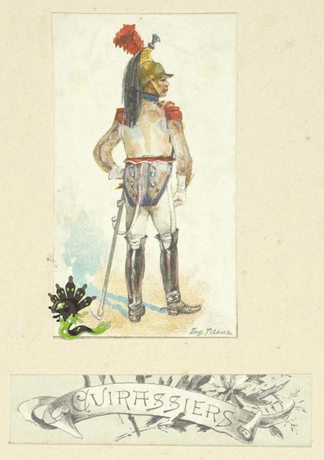
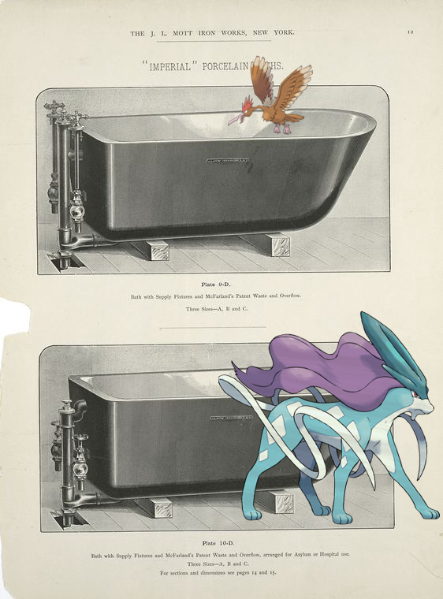

-
Cubchoo, Anorith + Gornji Milanovac.!
-
Zygarde ; Netherlands, 1808 [part 4].!
-
Camerupt – Indian embroidery in white silk on black net.!
-
, Bellossom ; Waldorf Astoria!
-
Froakie + Loomis, A..
-
Bouffalant @ Nottingham, William. Kingston.
-
Fearow, Suicune @ Imperial porcelain baths. Plates 9-D and 10-D..
-
Swoobat @ A new and correct Mapp of the WORLD
-
 Lillipup + The tin gee-gee
Lillipup + The tin gee-gee -
Tentacruel, Mudkip ; LUNCH [held by] OCCIDENTAL & ORIENTAL STEAMSHIP COMPANY [at] SS DORIC (SS;)!
-
 Aurorus, Azurill @ Germany. Würtemberg. 1798-1799
Aurorus, Azurill @ Germany. Würtemberg. 1798-1799 -
Rayquaza @ Russia, 1846.!
-
Tympole ; Gore, Mrs. ALS to 1852 Sept. 27